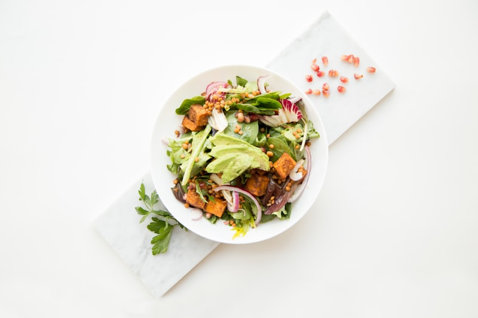

Two Nations, One Shared Culinary Soul
We honor the ancestral cooking styles of Central America using whole toasted spices, charred Mayan chiles, heirloom corn masa, and fragrant plantain leaves.

Carne Asada con Gallo Pinto
Charbroiled marinated skirt steak served over authentic red bean and rice Gallo Pinto, accompanied by golden fried salty queso frito, sweet maduros, and chimichurri.

Pepi?n de Pollo Tradicional
Guatemala's national culinary masterpiece: tender chicken simmered in a complex, thick sauce of roasted pumpkin seeds (pepitoria), sesame seeds, charred chiles, guisquil squash, and green beans.

Nacatamal Nica Gigante
Massive heirloom corn masa dumpling kneaded with lard and achiote, filled with marinated pork loin, seasoned rice, potato wheels, raisins, and spearmint, steamed in banana leaves.

Garnachas Chapinas & Cacao con Leche
Experience the street market energy of Antigua Guatemala and Managua. Our crispy Garnachas are small fried corn discs topped with seasoned ground beef, pickled beets/cabbage curtido, and dry cheese.
- Cacao Nica: Roasted cocoa beans ground with cinnamon and served cold over ice milk
- Atol de Elote: Warm, comforting sweet fresh corn custard drink
- Fresco de Ensalada: Diced pineapple, mamey, and apple fruit punch
Frequently Asked Questions
Learn more about our ingredients, traditions, and catering services.
Nacatamales are much larger (typically 1 to 1.5 lbs) and are wrapped in plantain/banana leaves rather than corn husks. Inside the achiote-flavored masa, you'll find a complete meal: seasoned pork, rice, potatoes, sweet peppers, olives, raisins, and fresh spearmint leaves.
Pepi?n is celebrated for its deep nutty, smoky flavor created by dry-toasting pumpkin seeds (pepitoria), sesame seeds (ajonjol?), cinnamon, cloves, and charred dried chiles (guaque and pasa) on the comal before grinding into a velvety recado sauce.
Yes! We offer full and half catering pans of Gallo Pinto, Carne Asada, Pepi?n de Pollo, and dozens of fresh steamed Nacatamales. Call us at (704) 568-8889 to arrange your event order.